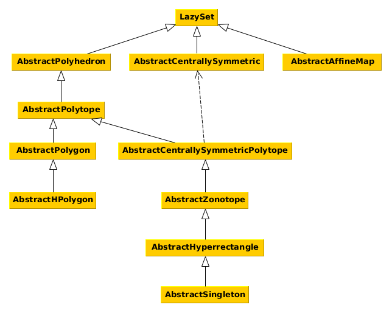

Set Interfaces
This section of the manual describes the interfaces for different set types. Every set that fits the description of an interface should also implement it. This helps in several ways:
- avoid code duplicates,
- provide functions for many sets at once,
- allow changes in the source code without changing the API.
The interface functions are outlined in the interface documentation. For implementations of the interfaces see the corresponding sub-pages linked in the respective sections.
The naming convention is such that all interface names (with the exception of the main abstract type LazySet) should be preceded by Abstract.
The following diagram shows the interface hierarchy.

- Set Interfaces
- General sets (LazySet)
- Support function and support vector
- Other globally defined set functions
- Set functions that override Base functions
- Aliases for set types
- Implementations
- Centrally symmetric sets (AbstractCentrallySymmetric)
- Polyhedra (AbstractPolyhedron)
- Polytopes (AbstractPolytope)
- Polygons (AbstractPolygon)
- Polygons in constraint representation (AbstractHPolygon)
- Centrally symmetric polytopes (AbstractCentrallySymmetricPolytope)
- Zonotopes (AbstractZonotope)
- Hyperrectangles (AbstractHyperrectangle)
- Singletons (AbstractSingleton)
- Affine maps (AbstractAffineMap)
General sets (LazySet)
Every convex set in this library implements this interface.
LazySets.LazySet — TypeLazySet{N}Abstract type for convex sets, i.e., sets characterized by a (possibly infinite) intersection of halfspaces, or equivalently, sets $S$ such that for any two elements $x, y ∈ S$ and $0 ≤ λ ≤ 1$ it holds that $λ·x + (1-λ)·y ∈ S$.
Notes
LazySet types should be parameterized with a type N, typically N<:Real, for using different numeric types.
Every concrete LazySet must define the following functions:
σ(d::AbstractVector{N}, S::LazySet{N}) where {N<:Real}– the support vector ofSin a given directiond; note that the numeric typeNofdandSmust be identical; for some set typesNmay be more restrictive thanRealdim(S::LazySet)– the ambient dimension ofS
The function
ρ(d::AbstractVector{N}, S::LazySet{N}) where {N<:Real}– the support function ofSin a given directiond; note that the numeric typeNofdandSmust be identical; for some set typesNmay be more restrictive thanReal
is optional because there is a fallback implementation relying on σ. However, for unbounded sets (which includes most lazy set types) this fallback cannot be used and an explicit method must be implemented.
The subtypes of LazySet (including abstract interfaces):
julia> subtypes(LazySet, false)
14-element Array{Any,1}:
AbstractAffineMap
AbstractCentrallySymmetric
AbstractPolyhedron
Bloating
CachedMinkowskiSumArray
CartesianProduct
CartesianProductArray
ConvexHull
ConvexHullArray
EmptySet
Intersection
IntersectionArray
MinkowskiSum
MinkowskiSumArrayIf we only consider concrete subtypes, then:
julia> concrete_subtypes = subtypes(LazySet, true);
julia> length(concrete_subtypes)
41
julia> println.(concrete_subtypes);
AffineMap
Ball1
Ball2
BallInf
Ballp
Bloating
CachedMinkowskiSumArray
CartesianProduct
CartesianProductArray
ConvexHull
ConvexHullArray
Ellipsoid
EmptySet
ExponentialMap
ExponentialProjectionMap
HParallelotope
HPolygon
HPolygonOpt
HPolyhedron
HPolytope
HalfSpace
Hyperplane
Hyperrectangle
Intersection
IntersectionArray
Interval
Line2D
LineSegment
LinearMap
Line{N,VN} where VN<:AbstractArray{N,1} where N<:Real
MinkowskiSum
MinkowskiSumArray
ResetMap
Singleton
SymmetricIntervalHull
Translation
Universe
VPolygon
VPolytope
ZeroSet
ZonotopeSupport function and support vector
Every LazySet type must define a function σ to compute the support vector.
LazySets.support_vector — Functionsupport_vectorAlias for the support vector σ.
LazySets.ρ — Methodρ(d::AbstractVector{N}, S::LazySet{N}) where {N<:Real}Evaluate the support function of a set in a given direction.
Input
d– directionS– convex set
Output
The support function of the set S for the direction d.
Notes
The numeric type of the direction and the set must be identical.
LazySets.support_function — Functionsupport_functionAlias for the support function ρ.
LazySets.σ — FunctionσFunction to compute the support vector σ.
LazySets.singleton_list — Methodsingleton_list(P::LazySet)Return the vertices of a polytopic set as a list of singletons.
Input
P– polytopic set
Output
The list of vertices of P, as Singleton.
Notes
This function relies on vertices_list, which raises an error if the set is not polytopic (e.g., unbounded).
LazySets.constraints — Methodconstraints(X::LazySet)Construct an iterator over the constraints of a polyhedral set.
Input
X– polyhedral set
Output
An iterator over the constraints of X.
LazySets.vertices — Methodvertices(X::LazySet)Construct an iterator over the vertices of a polyhedral set.
Input
X– polyhedral set
Output
An iterator over the vertices of X.
MiniQhull.delaunay — Functiondelaunay(X::LazySet)Compute the Delaunay triangulation of the given convex set.
Input
X– set
Output
A union of polytopes in vertex representation.
Notes
This function requires that you have properly installed the package MiniQhull.jl, including the library Qhull.
The method works in arbitrary dimension and the requirement is that the list of vertices of X can be obtained.
Other globally defined set functions
LazySets.basetype — Functionbasetype(T::Type{<:LazySet})Return the base type of the given set type (i.e., without type parameters).
Input
T– set type, used for dispatch
Output
The base type of T.
basetype(S::LazySet)Return the base type of the given set (i.e., without type parameters).
Input
S– set instance, used for dispatch
Output
The base type of S.
Examples
julia> z = rand(Zonotope);
julia> basetype(z)
Zonotope
julia> basetype(z + z)
MinkowskiSum
julia> basetype(LinearMap(rand(2, 2), z + z))
LinearMapLinearAlgebra.norm — Functionnorm(S::LazySet, [p]::Real=Inf)Return the norm of a convex set. It is the norm of the enclosing ball (of the given $p$-norm) of minimal volume that is centered in the origin.
Input
S– convex setp– (optional, default:Inf) norm
Output
A real number representing the norm.
LazySets.radius — Functionradius(S::LazySet, [p]::Real=Inf)Return the radius of a convex set. It is the radius of the enclosing ball (of the given $p$-norm) of minimal volume with the same center.
Input
S– convex setp– (optional, default:Inf) norm
Output
A real number representing the radius.
LazySets.diameter — Functiondiameter(S::LazySet, [p]::Real=Inf)Return the diameter of a convex set. It is the maximum distance between any two elements of the set, or, equivalently, the diameter of the enclosing ball (of the given $p$-norm) of minimal volume with the same center.
Input
S– convex setp– (optional, default:Inf) norm
Output
A real number representing the diameter.
LazySets.isbounded — Methodisbounded(S::LazySet)Determine whether a set is bounded.
Input
S– setalgorithm– (optional, default:"support_function") algorithm choice, possible options are"support_function"and"stiemke"
Output
true iff the set is bounded.
Algorithm
See the documentation of _isbounded_unit_dimensions or _isbounded_stiemke for details.
LazySets._isbounded_unit_dimensions — Method_isbounded_unit_dimensions(S::LazySet{N}) where {N<:Real}Determine whether a set is bounded in each unit dimension.
Input
S– set
Output
true iff the set is bounded in each unit dimension.
Algorithm
This function performs $2n$ support function checks, where $n$ is the ambient dimension of S.
LazySets._isbounded_stiemke — Method_isbounded_stiemke(P::HPolyhedron{N}; solver=LazySets.default_lp_solver(N),
check_nonempty::Bool=true) where {N<:Real}Determine whether a polyhedron is bounded using Stiemke's theorem of alternatives.
Input
P– polyhedronbackend– (optional, default:default_lp_solver(N)) the backend used to solve the linear programcheck_nonempty– (optional, default:true) iftrue, check the precondition to this algorithm thatPis non-empty
Output
true iff the polyhedron is bounded
Notes
The algorithm internally calls isempty to check whether the polyhedron is empty. This computation can be avoided using the check_nonempty flag.
Algorithm
The algorithm is based on Stiemke's theorem of alternatives, see e.g. [1].
Let the polyhedron $P$ be given in constraint form $Ax ≤ b$. We assume that the polyhedron is not empty.
Proposition 1. If $\ker(A)≠\{0\}$, then $P$ is unbounded.
Proposition 2. Assume that $ker(A)={0}$ and $P$ is non-empty. Then $P$ is bounded if and only if the following linear program admits a feasible solution: $\min∥y∥_1$ subject to $A^Ty=0$ and $y≥1$.
[1] Mangasarian, Olvi L. Nonlinear programming. Society for Industrial and Applied Mathematics, 1994.
LazySets.an_element — Methodan_element(S::LazySet{N}) where {N<:Real}Return some element of a convex set.
Input
S– convex set
Output
An element of a convex set.
Algorithm
An element of the set is obtained by evaluating its support vector along direction $[1, 0, …, 0]$.
LazySets.tosimplehrep — Methodtosimplehrep(S::LazySet)Return the simple H-representation $Ax ≤ b$ of a set from its list of linear constraints.
Input
S– set
Output
The tuple (A, b) where A is the matrix of normal directions and b is the vector of offsets.
Notes
This function only works for sets that can be represented exactly by a finite list of linear constraints. This fallback implementation relies on constraints_list(S).
LazySets.isuniversal — Methodisuniversal(X::LazySet{N}, [witness]::Bool=false) where {N<:Real}Check whether a given convex set is universal, and otherwise optionally compute a witness.
Input
X– convex setwitness– (optional, default:false) compute a witness if activated
Output
- If
witnessoption is deactivated:trueiff $X$ is universal - If
witnessoption is activated:(true, [])iff $X$ is universal(false, v)iff $X$ is not universal and $v ∉ X$
Notes
This is a naive fallback implementation.
LazySets.affine_map — Methodaffine_map(M::AbstractMatrix, X::LazySet, v::AbstractVector; kwargs...)Compute a concrete affine map.
Input
M– linear mapX– convex setv– translation vector
Output
A set representing the affine map of X.
Algorithm
The implementation applies the functions linear_map and translate.
LazySets.reflect — Methodreflect(P::LazySet{N}) where {N<:Real}Concrete reflection of a convex set P, resulting in the reflected set -P.
Note
This function requires that the list of constraints of the set P is available, i.e. such that it can be written as $P = \{z ∈ ℝⁿ: ⋂ sᵢᵀz ≤ rᵢ, i = 1, ..., N\}.$
This function can be used to implement the alternative definition of the Minkowski Difference, which writes as
by calling minkowski_sum(A, reflect(B)).
LazySets.is_interior_point — Methodis_interior_point(d::AbstractVector{N}, P::LazySet{N};
p=N(Inf), ε=_rtol(N)) where {N<:Real}Check if the point d is contained in the interior of the convex set P.
Input
d– pointP– setp– (optional; default:N(Inf)) norm of the ball used to apply the error toleranceε– (optional; default:_rtol(N)) error tolerance of check
Output
Boolean which indicates if the point d is contained in P.
Algorithm
The implementation checks if a Ballp of norm p with center d and radius ε is contained in the set P. This is a numerical check for d ∈ interior(P) with error tolerance ε.
LazySets.isoperationtype — Methodisoperationtype(X::Type{<:LazySet})Check whether the given LazySet type is an operation or not.
Input
X– subtype ofLazySet
Output
true if the given set type is a set-based operation and false otherwise.
Notes
The fallback for this function returns an error that isoperationtype is not implemented. Subtypes of LazySet should dispatch on this function as required.
See also isoperation(X<:LazySet).
Examples
julia> isoperationtype(BallInf)
false
julia> isoperationtype(LinearMap)
trueLazySets.isoperation — Methodisoperation(X::LazySet)Check whether the given LazySet is an instance of a set operation or not.
Input
X– aLazySet
Output
true if X is an instance of a set-based operation and false otherwise.
Notes
The fallback implementation returns whether the set type of the input is an operation or not using isoperationtype.
See also isoperationtype(X::Type{<:LazySet}).
Examples
julia> B = BallInf([0.0, 0.0], 1.0);
julia> isoperation(B)
false
julia> isoperation(B ⊕ B)
trueLazySets.isequivalent — Methodisequivalent(X::LazySet, Y::LazySet)Return whether two LazySets are equal in the mathematical sense, i.e. equivalent.
Input
X– anyLazySetY– anotherLazySet
Output
true iff X is equivalent to Y.
Algorithm
First, the check X == Y is performed which returns true if and only if the given sets are of the same type, and have the same values (modulo floating-point tolerance). Otherwise, the double inclusion check X ⊆ Y && Y ⊆ X is used.
Examples
julia> X = BallInf([0.1, 0.2], 0.3);
julia> Y = convert(HPolytope, X);
julia> X == Y
false
julia> isequivalent(X, Y)
trueLazySets.isconvextype — Methodisconvextype(X::Type{<:LazySet})Check whether the given LazySet type is convex.
Input
X– subtype ofLazySet
Output
true if the given set type is guaranteed to be convex by using only type information, and false otherwise.
Notes
Since this operation only acts on types (not on values), it can return false negatives, i.e. there may be instances where the set is convex, even though the answer of this function is false. The examples below illustrate this point.
Examples
A ball in the infinity norm is always convex, hence we get:
julia> isconvextype(BallInf)
trueFor instance, the union (UnionSet) of two sets may in general be either convex or not, since convexity cannot be decided by just using type information. Hence, isconvextype returns false if X is Type{<:UnionSet}.
julia> isconvextype(UnionSet)
falseHowever, the type parameters from the set operations allow to decide convexity in some cases, by falling back to the convexity of the type of its arguments. Consider for instance the lazy intersection. The intersection of two convex sets is always convex, hence we can get:
julia> isconvextype(Intersection{Float64, BallInf{Float64}, BallInf{Float64}})
trueLazySets.surface — Methodsurface(X::LazySet{N}) where {N}Compute the surface area of a set.
Input
X– set
Output
A number representing the surface area of X.
LazySets.area — Methodarea(X::LazySet{N}) where {N}Compute the area of a two-dimensional polytopic set using the Shoelace formula.
Input
X– two-dimensional set
Output
A number representing the area of X.
Notes
This algorithm is applicable to any lazy set X such that its list of vertices, vertices_list, can be computed.
Algorithm
Let m be the number of vertices of X. The following instances are considered:
m = 0, 1, 2: the output is zero.m = 3: the triangle case is computed using the Shoelace formula with 3 points.m = 4: the quadrilateral case is obtained by the factored version of the Shoelace formula with 4 points.
Otherwise, the general Shoelace formula is used; for detals see the wikipedia article Shoelace formula.
area(∅::EmptySet{N}) where {N}Return the area of an empty set.
Input
∅– empty set
Output
The zero element of type N.
LazySets.concretize — Methodconcretize(X::LazySet)Construct a concrete representation of a (possibly lazy) set.
Input
X– set
Output
A concrete representation of X (as far as possible).
Notes
Since not every lazy set has a concrete set representation in this library, the result may be partially lazy.
Plotting is available for general one- or two-dimensional LazySets, provided that the overapproximation using iterative refinement is available:
LazySets.plot_recipe — Methodplot_recipe(X::LazySet{N}, [ε]::N=N(PLOT_PRECISION)) where {N<:Real}Convert a convex set to a pair (x, y) of points for plotting.
Input
X– convex setε– (optional, default:PLOT_PRECISION) approximation error bound
Output
A pair (x, y) of points that can be plotted.
Algorithm
We first assert that X is bounded.
One-dimensional sets are converted to an Interval. We do not support three-dimensional or higher-dimensional sets at the moment.
For two-dimensional sets, we first compute a polygonal overapproximation. The second argument, ε, corresponds to the error in Hausdorff distance between the overapproximating set and X. The default value PLOT_PRECISION is chosen such that the unit ball in the 2-norm is approximated with reasonable accuracy. On the other hand, if you only want to produce a fast box-overapproximation of X, pass ε=Inf. Finally, we use the plot recipe for polygons.
RecipesBase.apply_recipe — Methodplot_lazyset(X::LazySet{N}, [ε]::N=N(PLOT_PRECISION); ...) where {N<:Real}Plot a convex set.
Input
X– convex setε– (optional, default:PLOT_PRECISION) approximation error bound
Notes
See plot_recipe(::LazySet{<:Real}).
For polyhedral set types (subtypes of AbstractPolyhedron), the argument ε is ignored.
Examples
julia> B = Ball2(ones(2), 0.1);
julia> plot(B, 1e-3) # default accuracy value (explicitly given for clarity)
julia> plot(B, 1e-2) # faster but less accurate than the previous callRecipesBase.apply_recipe — Methodplot_list(list::AbstractVector{VN}, [ε]::N=N(PLOT_PRECISION),
[Nφ]::Int=PLOT_POLAR_DIRECTIONS, [fast]::Bool=false; ...)
where {N<:Real, VN<:LazySet{N}}Plot a list of convex sets.
Input
list– list of convex sets (1D or 2D)ε– (optional, default:PLOT_PRECISION) approximation error boundNφ– (optional, default:PLOT_POLAR_DIRECTIONS) number of polar directions (used to plot lazy intersections)fast– (optional, default:false) switch for faster plotting but without individual plot recipes (see notes below)
Notes
For each set in the list we apply an individual plot recipe.
The option fast provides access to a faster plotting scheme where all sets in the list are first converted to polytopes and then plotted in one single run. This, however, is not suitable when plotting flat sets (line segments, singletons) because then the polytope plot recipe does not deliver good results. Hence by default we do not use this option. For plotting a large number of (non-flat) polytopes, we highly advise activating this option.
Examples
julia> B1 = BallInf(zeros(2), 0.4);
julia> B2 = BallInf(ones(2), 0.4);
julia> plot([B1, B2])Some of the sets in the list may not be plotted precisely but rather overapproximated first. The second argument ε controls the accuracy of this overapproximation.
julia> Bs = [BallInf(zeros(2), 0.4), Ball2(ones(2), 0.4)];
julia> plot(Bs, 1e-3) # default accuracy value (explicitly given for clarity)
julia> plot(Bs, 1e-2) # faster but less accurate than the previous callFor three-dimensional sets, we support Makie:
LazySets.plot3d — Functionplot3d(S::LazySet{N}; backend=default_polyhedra_backend(S, N),
alpha=1.0, color=:blue, colormap=:viridis, colorrange=nothing,
interpolate=false, linewidth=1, overdraw=false, shading=true,
transparency=true, visible=true) where {N}Plot a three-dimensional convex set using Makie.
Input
S– convex setbackend– (optional, default:default_polyhedra_backend(S, N)) polyhedral computations backendalpha– (optional, default:1.0) float in[0,1]; the alpha or transparency valuecolor– (optional, default::blue)SymbolorColorant; the color of the main plot element (markers, lines, etc.) and it can be a color symbol/string like:redcolormap– (optional, default::viridis) the color map of the main plot; callavailable_gradients()to see what gradients are available, and it can also be used as[:red, :black]colorrange– (optional, default:nothing, which falls back toMakie.AbstractPlotting.Automatic()) a tuple(min, max)whereminandmaxspecify the data range to be used for indexing the colormapinterpolate– (optional, default:false) a bool for heatmap and images, it toggles color interpolation between nearby pixelslinewidth– (optional, default:1) a number that specifies the width of the line inlineandlinesegmentsplotsoverdraw– (optional, default:false)shading– (optional, default:true) a boolean that specifies if shading should be on or not (for meshes)transparency– (optional, default:true) iftrue, the set is transparent otherwise it is displayed as a solid objectvisible– (optional, default:true) a bool that toggles visibility of the plot
For a complete list of attributes and usage see Makie's documentation.
Notes
This plot recipe works by computing the list of constraints of S and converting to a polytope in H-representation. Then, this polytope is transformed with Polyhedra.Mesh and it is plotted using the mesh function.
If the function constraints_list is not applicable to your set S, try overapproximation first; e.g. via
julia> using LazySets.Approximations
julia> Sapprox = overapproximate(S, SphericalDirections(10))
julia> plot3d(Sapprox)The number 10 above corresponds to the number of directions considered; for better resolution use higher values (but it will take longer).
For efficiency consider using the CDDLib backend, as in
julia> using CDDLib
julia> plot3d(Sapprox, backend=CDDLib.Library())Examples
The functionality requires both Polyhedra and Makie; so after loading LazySets, do using Makie, Polyhedra (or using Polyhedra, Makie, the order doesn't matter).
julia> using LazySets, Makie, Polyhedra
julia> plot3d(10. * rand(Hyperrectangle, dim=3))
julia> plot3d!(10. * rand(Hyperrectangle, dim=3), color=:red)LazySets.plot3d! — Functionplot3d!(S::LazySet{N}; backend=default_polyhedra_backend(S, N),
alpha=1.0, color=:blue, colormap=:viridis, colorrange=nothing, interpolate=false,
linewidth=1, overdraw=false, shading=true, transparency=true, visible=true) where {N}Plot a three-dimensional convex set using Makie.
Input
See plot3d for the description of the inputs. For a complete list of attributes and usage see Makie's documentation.
Notes
See the documentation of plot3d for examples.
Set functions that override Base functions
Base.:== — Method==(X::LazySet, Y::LazySet)Return whether two LazySets of the same type are exactly equal.
Input
X– anyLazySetY– anotherLazySetof the same type asX
Output
trueiffXis equal toY.
Notes
The check is purely syntactic and the sets need to have the same base type. For instance, X::VPolytope == Y::HPolytope returns false even if X and Y represent the same polytope. However X::HPolytope{Int64} == Y::HPolytope{Float64} is a valid comparison.
Algorithm
We recursively compare the fields of X and Y until a mismatch is found.
Examples
julia> HalfSpace([1], 1) == HalfSpace([1], 1)
true
julia> HalfSpace([1], 1) == HalfSpace([1.0], 1.0)
true
julia> Ball1([0.], 1.) == Ball2([0.], 1.)
falseBase.:≈ — Method≈(X::LazySet, Y::LazySet)Return whether two LazySets of the same type are approximately equal.
Input
X– anyLazySetY– anotherLazySetof the same type asX
Output
trueiffXis equal toY.
Notes
The check is purely syntactic and the sets need to have the same base type. For instance, X::VPolytope ≈ Y::HPolytope returns false even if X and Y represent the same polytope. However X::HPolytope{Int64} ≈ Y::HPolytope{Float64} is a valid comparison.
Algorithm
We recursively compare the fields of X and Y until a mismatch is found.
Examples
julia> HalfSpace([1], 1) ≈ HalfSpace([1], 1)
true
julia> HalfSpace([1], 1) ≈ HalfSpace([1.00000001], 0.99999999)
true
julia> HalfSpace([1], 1) ≈ HalfSpace([1.0], 1.0)
true
julia> Ball1([0.], 1.) ≈ Ball2([0.], 1.)
falseBase.copy — Methodcopy(S::LazySet)Return a deep copy of the given set by copying its values recursively.
Input
S– anyLazySet
Output
A copy of S.
Notes
This function performs a deepcopy of each field in S, resulting in a completely independent object. See the documentation of ?deepcopy for further details.
Base.eltype — Functioneltype(::Type{<:LazySet{N}}) where {N}Return the numeric type (N) of the given set type.
Input
T– set type, used for dispatch
Output
The numeric type of T.
eltype(::LazySet{N}) where {N}Return the numeric type (N) of the given set.
Input
X– set instance, used for dispatch
Output
The numeric type of X.
Aliases for set types
LazySets.CompactSet — ConstantCompactSetAn alias for compact set types.
Notes
Most lazy operations are not captured by this alias because whether their result is compact or not depends on the argument(s).
LazySets.NonCompactSet — ConstantNonCompactSetAn alias for non-compact set types.
Notes
Most lazy operations are not captured by this alias because whether their result is non-compact or not depends on the argument(s).
Implementations
Concrete set representations:
Lazy set operations:
- Affine map (AffineMap)
- Linear map (LinearMap)
- Exponential map (ExponentialMap)
- Exponential projection map (ExponentialProjectionMap)
- Reset map (ResetMap)
- Translation
- Bloating
- Binary Cartesian product (CartesianProduct)
- $n$-ary Cartesian product (CartesianProductArray)
- Binary convex hull (ConvexHull)
- $n$-ary convex hull (ConvexHullArray)
- Binary intersection
- $n$-ary intersection (IntersectionArray)
- Binary Minkowski sum (MinkowskiSum)
- $n$-ary Minkowski sum (MinkowskiSumArray)
- $n$-ary Minkowski sum with cache (CachedMinkowskiSumArray)
- Binary set union (UnionSet)
- $n$-ary set union (UnionSetArray)
- Complement
- Rectification
Centrally symmetric sets (AbstractCentrallySymmetric)
Centrally symmetric sets such as balls of different norms are characterized by a center. Note that there is a special interface combination Centrally symmetric polytope.
LazySets.AbstractCentrallySymmetric — TypeAbstractCentrallySymmetric{N<:Real} <: LazySet{N}Abstract type for centrally symmetric sets.
Notes
Every concrete AbstractCentrallySymmetric must define the following functions:
center(::AbstractCentrallySymmetric{N})– return the center pointcenter(::AbstractCentrallySymmetric{N}, i::Int)– return the center point at indexi
julia> subtypes(AbstractCentrallySymmetric)
3-element Array{Any,1}:
Ball2
Ballp
EllipsoidThis interface defines the following functions:
LazySets.dim — Methoddim(S::AbstractCentrallySymmetric)Return the ambient dimension of a centrally symmetric set.
Input
S– set
Output
The ambient dimension of the set.
LazySets.isbounded — Methodisbounded(S::AbstractCentrallySymmetric)Determine whether a centrally symmetric set is bounded.
Input
S– centrally symmetric set
Output
true (since a set with a unique center must be bounded).
LazySets.isuniversal — Methodisuniversal(S::AbstractCentrallySymmetric{N}, [witness]::Bool=false
) where {N<:Real}Check whether a centrally symmetric set is universal.
Input
S– centrally symmetric setwitness– (optional, default:false) compute a witness if activated
Output
- If
witnessoption is deactivated:false - If
witnessoption is activated:(false, v)where $v ∉ S$
Algorithm
A witness is obtained by computing the support vector in direction d = [1, 0, …, 0] and adding d on top.
LazySets.an_element — Methodan_element(S::AbstractCentrallySymmetric{N}) where {N<:Real}Return some element of a centrally symmetric set.
Input
S– centrally symmetric set
Output
The center of the centrally symmetric set.
Base.isempty — Methodisempty(S::AbstractCentrallySymmetric)Return if a centrally symmetric set is empty or not.
Input
S– centrally symmetric set
Output
false.
LazySets.center — Methodcenter(H::AbstractCentrallySymmetric{N}, i::Int) where {N<:Real}Return the center along a given dimension of a centrally symmetric set.
Input
S– centrally symmetric seti– dimension of interest
Output
The center along a given dimension of the centrally symmetric set.
Implementations
Polyhedra (AbstractPolyhedron)
A polyhedron has finitely many facets (H-representation) and is not necessarily bounded.
LazySets.AbstractPolyhedron — TypeAbstractPolyhedron{N<:Real} <: LazySet{N}Abstract type for compact convex polyhedral sets.
Notes
Every concrete AbstractPolyhedron must define the following functions:
constraints_list(::AbstractPolyhedron{N})– return a list of all facet constraints
julia> subtypes(AbstractPolyhedron)
7-element Array{Any,1}:
AbstractPolytope
HPolyhedron
HalfSpace
Hyperplane
Line2D
Line{N,VN} where VN<:AbstractArray{N,1} where N<:Real
UniversePolyhedra are defined as the intersection of a finite number of closed half-spaces. As such, polyhedra are closed and convex but not necessarily bounded. Bounded polyhedra are called polytopes (see AbstractPolytope).
This interface defines the following functions:
Base.:∈ — Method∈(x::AbstractVector{N}, P::AbstractPolyhedron{N}) where {N<:Real}Check whether a given point is contained in a polyhedron.
Input
x– point/vectorP– polyhedron
Output
true iff $x ∈ P$.
Algorithm
This implementation checks if the point lies inside each defining half-space.
LazySets.isuniversal — Methodisuniversal(P::AbstractPolyhedron{N}, [witness]::Bool=false
) where {N<:Real}Check whether a polyhedron is universal.
Input
P– polyhedronwitness– (optional, default:false) compute a witness if activated
Output
- If
witnessoption is deactivated:trueiff $P$ is universal - If
witnessoption is activated:(true, [])iff $P$ is universal(false, v)iff $P$ is not universal and $v ∉ P$
Algorithm
P is universal iff it has no constraints.
A witness is produced using isuniversal(H) where H is the first linear constraint of P.
LazySets.constrained_dimensions — Methodconstrained_dimensions(P::AbstractPolyhedron) where {N<:Real}Return the indices in which a polyhedron is constrained.
Input
P– polyhedron
Output
A vector of ascending indices i such that the polyhedron is constrained in dimension i.
Examples
A 2D polyhedron with constraint $x1 ≥ 0$ is constrained in dimension 1 only.
LazySets.linear_map — Methodlinear_map(M::AbstractMatrix{N},
P::AbstractPolyhedron{N};
[algorithm]::Union{String, Nothing}=nothing,
[check_invertibility]::Bool=true,
[cond_tol]::Number=DEFAULT_COND_TOL,
[inverse]::Union{AbstractMatrix{N}, Nothing}=nothing,
[backend]=nothing,
[elimination_method]=nothing) where {N<:Real}Concrete linear map of a polyhedral set.
Input
M– matrixP– polyhedral setalgorithm– (optional; default:nothing) algorithm to be used; for the description see the Algorithm section below; possible choices are:"inverse", alias:"inv""inverse_right", alias:"inv_right""elimination", alias:"elim""lift""vrep"
check_invertibility– (optional, default:true) iftruecheck whether given matrixMis invertible; set tofalseonly if you know thatMis invertiblecond_tol– (optional; default:DEFAULT_COND_TOL) tolerance of matrix condition (used to check whether the matrix is invertible)inverse– (optional; default:nothing) matrix inverseM⁻¹; use this option if you have already computed the inverse matrix ofMbackend– (optional: default:nothing) polyhedra backendelimination_method– (optional: default:nothing) elimination method for the"elimination"algorithm
Output
The type of the result is "as close as possible" to the the type of P. Let (m, n) be the size of M, where m ≠ n is allowed for rectangular maps.
To fix the type of the output to something different than the default value, consider post-processing the result of this function with a call to a suitable convert method.
In particular, the output depends on the type of P, on m, and the algorithm that was used:
If the vertex-based approach was used:
- If
Pis aVPolygonandm = 2then the output is aVPolygon. - If
Pis aVPolytopethen the output is aVPolytope. - Otherwise, the output is an
Intervalifm = 1, aVPolygonifm = 2and aVPolytopein other cases.
- If
If the invertibility criterion was used:
- The types of
HalfSpace,Hyperplane,Line2DandAbstractHPolygonare preserved. - If
Pis anAbstractPolytope, then the output is anIntervalifm = 1, anHPolygonifm = 2and anHPolytopein other cases. - Otherwise, the output is an
HPolyhedron.
- The types of
Notes
Since the different linear map algorithms work at the level of constraints (not sets representations), this function uses dispatch on two stages: once the algorithm has been defined, first the helper functions _linear_map_hrep_helper (resp. _linear_map_vrep) are invoked, which dispatch on the set type. Then, each helper function calls the concrete implementation of _linear_map_hrep, which dispatches on the algorithm, and returns a list of constraints.
To simplify working with different algorithms and options, the types <: AbstractLinearMapAlgorithm are used. These types are singleton type or types that carry only the key data for the given algorithm, such as the matrix inverse or the polyhedra backend.
New subtypes of the AbstractPolyhedron interface may define their own helper functions _linear_map_vrep, respectively _linear_map_hrep_helper for special handling of the constraints returned by the implementations of _linear_map_hrep; otherwise the fallback implementation for AbstractPolyhedron is used, which instantiates an HPolyhedron.
Algorithm
This function mainly implements several approaches for the linear map: inverse, right inverse, transformation to the vertex representation, variable elimination, and variable lifting. Depending on the properties of M and P, one algorithm may be preferable over the other. Details on the algorithms are given in the following subsections.
Otherwise, if the algorithm argument is not specified, a default option is chosen based on heuristics on the types and values of M and P:
- If the
"inverse"algorithm applies, it is used. - If the
"inverse_right"algorithm applies, it is used. - Otherwise, if the
"lift"algorithm applies, it is used. - Otherwise, the
"elimination"algorithm is used.
Note that "inverse" does not require the external library Polyhedra, and neither does "inverse_right". However, the fallback method "elimination" requires Polyhedra as well as the library CDDLib.
The optional keyword arguments inverse and check_invertibility modify the default behavior:
- If an inverse matrix is passed in
inverse, the given algorithm is applied, and if none is given, either"inverse"or"inverse_right"is applied (in that order of preference). - If
check_invertibilityis set tofalse, the given algorithm is applied, and if none is given, either"inverse"or"inverse_right"is applied (in that order of preference).
Inverse
This algorithm is invoked with the keyword argument algorithm="inverse" (or algorithm="inv"). The algorithm requires that M is invertible, square, and dense. If you know a priori that M is invertible, set the flag check_invertibility=false, such that no extra checks are done within linear_map. Otherwise, we check the sufficient condition that the condition number of M is not too high. The threshold for the condition number can be modified from its default value, DEFAULT_COND_TOL, by passing a custom cond_tol.
The algorithm is described next. Assuming that the matrix $M$ is invertible (which we check via a sufficient condition,), $y = M x$ implies $x = \text{inv}(M) y$ and we can transform the polyhedron $A x ≤ b$ to the polyhedron $A \text{inv}(M) y ≤ b$.
If the dense condition on M is not fullfilled, there are two suggested workarounds: either transform to dense matrix, i.e. calling linear_map with Matrix(M), or use the "inverse_right" algorithm, which does not compute the inverse matrix explicitly, but uses a polyalgorithm; see the documentation of ? for details.
Inverse-right
This algorithm is invoked with the keyword argument algorithm="inverse_right" (or algorithm="inv_right"). This algorithm applies to square and invertible matrices M. The idea is essentially the same as for the "inverse" algorithm; the difference is that in "inverse" the full matrix inverse is computed, and in "inverse_right" only the left division on the normal vectors is used. In particular, "inverse_right" is good as a workaround when M is sparse (since the inv function is not available for sparse matrices).
Elimination
This algorithm is invoked with the keyword argument algorithm = "elimination" or algorithm = "elim". The algorithm applies to any matrix M (invertible or not), and any polyhedron P (bounded or not).
The idea is described next. If P : Ax <= b and y = Mx denote the polyhedron and the linear map respectively, we consider the vector z = [y, x], write the given equalities and the inequalities, and then eliminate the last x variables (there are length(x) in total) using a call to Polyhedra.eliminate to a backend library that can do variable elimination, typically CDDLib with the BlockElimination() algorithm. In this way we have eliminated the "old" variables x and kept the "new" or transformed variables "y".
The default elimination method is block elimination. For possible options we refer to the documentation of Polyhedra, projection/elimination.
Lift
This algorithm is invoked with the keyword argument algorithm="lift". The algorithm applies if M is rectangular of size m × n with m > n and full rank (i.e. of rank n).
The idea is to embed the polyhedron into the m-dimensional space by appending zeros, i.e. extending all constraints of P to m dimensions, and constraining the last m - n dimensions to 0. The matrix resulting matrix is extended to an invertible m × m matrix and the algorithm using the inverse of the linear map is applied. For the technical details of the extension of M to a higher-dimensional invertible matrix, see LazySets.Arrays.extend.
Vertex representation
This algorithm is invoked with the keyword argument algorithm="vrep". The idea is to convert the polyhedron to its vertex representation and apply the linear map to each vertex of P.
The returned set is a polytope in vertex representation. Note that conversion of the result back to half-space representation is not computed by default, since this may be costly. If you used this algorithm and still want to convert back to half-space representation, apply tohrep to the result of this function. Note that this method only works for bounded polyhedra.
LazySets.chebyshev_center — Methodchebyshev_center(P::AbstractPolyhedron{N};
[get_radius]::Bool=false,
[backend]=default_polyhedra_backend(P, N),
[solver]=default_lp_solver_polyhedra(N; presolve=true)
) where {N<:AbstractFloat}Compute the Chebyshev center of a polytope.
Input
P– polytopeget_radius– (optional; default:false) option to additionally return the radius of the largest ball enclosed byParound the Chebyshev centerbackend– (optional; default:default_polyhedra_backend(P, N)) the backend for polyhedral computationssolver– (optional; default:default_lp_solver_polyhedra(N; presolve=true)) the LP solver passed toPolyhedra
Output
If get_radius is false, the result is the Chebyshev center of P. If get_radius is true, the result is the pair (c, r) where c is the Chebyshev center of P and r is the radius of the largest ball with center c enclosed by P.
Notes
The Chebyshev center is the center of a largest Euclidean ball enclosed by P. In general, the center of such a ball is not unique (but the radius is).
LazySets.an_element — Methodan_element(P::AbstractPolyhedron{N}) where {N<:Real}Return some element of a convex set.
Input
P– polyhedron
Output
An element of a polyhedron.
Algorithm
An element of the polyhedron is obtained by evaluating its support vector along direction $[1, 0, …, 0]$.
LazySets.isbounded — Methodisbounded(P::AbstractPolyhedron{N}; solver=LazySets.default_lp_solver(N)) where {N<:Real}Determine whether a polyhedron is bounded.
Input
P– polyhedronbackend– (optional, default:default_lp_solver(N)) the backend used to solve the linear program
Output
true iff the polyhedron is bounded
Algorithm
We first check if the polyhedron has more than max(dim(P), 1) constraints, which is a necessary condition for boundedness.
If so, we check boundedness via _isbounded_stiemke.
LazySets.vertices_list — Methodvertices_list(P::AbstractPolyhedron; check_boundedness::Bool=true)Return the list of vertices of a polyhedron in constraint representation.
Input
P– polyhedron in constraint representationcheck_boundedness– (optional, default:true) iftrue, check whether the polyhedron is bounded
Output
The list of vertices of P, or an error if P is unbounded.
Notes
This function returns an error if the polyhedron is unbounded. Otherwise, the polyhedron is converted to an HPolytope and its list of vertices is computed.
Examples
julia> P = HPolyhedron([HalfSpace([1.0, 0.0], 1.0),
HalfSpace([0.0, 1.0], 1.0),
HalfSpace([-1.0, 0.0], 1.0),
HalfSpace([0.0, -1.0], 1.0)]);
julia> length(vertices_list(P))
4Plotting (bounded) polyhedra is available, too:
LazySets.plot_recipe — Methodplot_recipe(P::AbstractPolyhedron{N}, [ε]::N=zero(N)) where {N<:Real}Convert a (bounded) polyhedron to a pair (x, y) of points for plotting.
Input
P– bounded polyhedronε– (optional, default:0) ignored, used for dispatch
Output
A pair (x, y) of points that can be plotted.
Algorithm
We first assert that P is bounded (i.e., that P is a polytope).
One-dimensional polytopes are converted to an Interval. Three-dimensional or higher-dimensional polytopes are not supported.
For two-dimensional polytopes (i.e., polygons) we compute their set of vertices using vertices_list and then plot the convex hull of these vertices.
Implementations
- Half-space (HalfSpace)
- Polyhedron in constraint representation (HPolyhedron)
- Hyperplane
- Line2D
- Line
- Universe
Polytopes (AbstractPolytope)
A polytope is a bounded set with finitely many vertices (V-representation) resp. facets (H-representation). Note that there is a special interface combination Centrally symmetric polytope.
LazySets.AbstractPolytope — TypeAbstractPolytope{N<:Real} <: AbstractPolyhedron{N}Abstract type for compact convex polytopic sets.
Notes
Every concrete AbstractPolytope must define the following functions:
vertices_list(::AbstractPolytope{N})– return a list of all vertices
julia> subtypes(AbstractPolytope)
4-element Array{Any,1}:
AbstractCentrallySymmetricPolytope
AbstractPolygon
HPolytope
VPolytopeA polytope is a bounded polyhedron (see AbstractPolyhedron). Polytopes are compact convex sets with either of the following equivalent properties:
- They are the intersection of a finite number of closed half-spaces.
- They are the convex hull of finitely many vertices.
This interface defines the following functions:
LazySets.isbounded — Methodisbounded(P::AbstractPolytope)Determine whether a polytopic set is bounded.
Input
P– polytopic set
Output
true (since a polytope must be bounded).
LazySets.isuniversal — Methodisuniversal(P::AbstractPolytope{N}, [witness]::Bool=false
) where {N<:Real}Check whether a polyhedron is universal.
Input
P– polyhedronwitness– (optional, default:false) compute a witness if activated
Output
- If
witnessoption is deactivated:false - If
witnessoption is activated:(false, v)where $v ∉ P$
Algorithm
A witness is produced using isuniversal(H) where H is the first linear constraint of P.
Base.isempty — Methodisempty(P::AbstractPolytope)Determine whether a polytope is empty.
Input
P– abstract polytope
Output
true if the given polytope contains no vertices, and false otherwise.
Algorithm
This algorithm checks whether the vertices_list of the given polytope is empty or not.
Implementations
Polygons (AbstractPolygon)
A polygon is a two-dimensional polytope.
LazySets.AbstractPolygon — TypeAbstractPolygon{N<:Real} <: AbstractPolytope{N}Abstract type for polygons (i.e., 2D polytopes).
Notes
Every concrete AbstractPolygon must define the following functions:
tovrep(::AbstractPolygon{N})– transform into V-representationtohrep(::AbstractPolygon{N}) where {S<:AbstractHPolygon{N}}– transform into H-representation
julia> subtypes(AbstractPolygon)
2-element Array{Any,1}:
AbstractHPolygon
VPolygonThis interface defines the following functions:
LazySets.dim — Methoddim(P::AbstractPolygon)Return the ambient dimension of a polygon.
Input
P– polygon
Output
The ambient dimension of the polygon, which is 2.
LazySets.linear_map — Methodlinear_map(M::AbstractMatrix{N},
P::AbstractPolyhedron{N};
[algorithm]::Union{String, Nothing}=nothing,
[check_invertibility]::Bool=true,
[cond_tol]::Number=DEFAULT_COND_TOL,
[inverse]::Union{AbstractMatrix{N}, Nothing}=nothing,
[backend]=nothing,
[elimination_method]=nothing) where {N<:Real}Concrete linear map of a polyhedral set.
Input
M– matrixP– polyhedral setalgorithm– (optional; default:nothing) algorithm to be used; for the description see the Algorithm section below; possible choices are:"inverse", alias:"inv""inverse_right", alias:"inv_right""elimination", alias:"elim""lift""vrep"
check_invertibility– (optional, default:true) iftruecheck whether given matrixMis invertible; set tofalseonly if you know thatMis invertiblecond_tol– (optional; default:DEFAULT_COND_TOL) tolerance of matrix condition (used to check whether the matrix is invertible)inverse– (optional; default:nothing) matrix inverseM⁻¹; use this option if you have already computed the inverse matrix ofMbackend– (optional: default:nothing) polyhedra backendelimination_method– (optional: default:nothing) elimination method for the"elimination"algorithm
Output
The type of the result is "as close as possible" to the the type of P. Let (m, n) be the size of M, where m ≠ n is allowed for rectangular maps.
To fix the type of the output to something different than the default value, consider post-processing the result of this function with a call to a suitable convert method.
In particular, the output depends on the type of P, on m, and the algorithm that was used:
If the vertex-based approach was used:
- If
Pis aVPolygonandm = 2then the output is aVPolygon. - If
Pis aVPolytopethen the output is aVPolytope. - Otherwise, the output is an
Intervalifm = 1, aVPolygonifm = 2and aVPolytopein other cases.
- If
If the invertibility criterion was used:
- The types of
HalfSpace,Hyperplane,Line2DandAbstractHPolygonare preserved. - If
Pis anAbstractPolytope, then the output is anIntervalifm = 1, anHPolygonifm = 2and anHPolytopein other cases. - Otherwise, the output is an
HPolyhedron.
- The types of
Notes
Since the different linear map algorithms work at the level of constraints (not sets representations), this function uses dispatch on two stages: once the algorithm has been defined, first the helper functions _linear_map_hrep_helper (resp. _linear_map_vrep) are invoked, which dispatch on the set type. Then, each helper function calls the concrete implementation of _linear_map_hrep, which dispatches on the algorithm, and returns a list of constraints.
To simplify working with different algorithms and options, the types <: AbstractLinearMapAlgorithm are used. These types are singleton type or types that carry only the key data for the given algorithm, such as the matrix inverse or the polyhedra backend.
New subtypes of the AbstractPolyhedron interface may define their own helper functions _linear_map_vrep, respectively _linear_map_hrep_helper for special handling of the constraints returned by the implementations of _linear_map_hrep; otherwise the fallback implementation for AbstractPolyhedron is used, which instantiates an HPolyhedron.
Algorithm
This function mainly implements several approaches for the linear map: inverse, right inverse, transformation to the vertex representation, variable elimination, and variable lifting. Depending on the properties of M and P, one algorithm may be preferable over the other. Details on the algorithms are given in the following subsections.
Otherwise, if the algorithm argument is not specified, a default option is chosen based on heuristics on the types and values of M and P:
- If the
"inverse"algorithm applies, it is used. - If the
"inverse_right"algorithm applies, it is used. - Otherwise, if the
"lift"algorithm applies, it is used. - Otherwise, the
"elimination"algorithm is used.
Note that "inverse" does not require the external library Polyhedra, and neither does "inverse_right". However, the fallback method "elimination" requires Polyhedra as well as the library CDDLib.
The optional keyword arguments inverse and check_invertibility modify the default behavior:
- If an inverse matrix is passed in
inverse, the given algorithm is applied, and if none is given, either"inverse"or"inverse_right"is applied (in that order of preference). - If
check_invertibilityis set tofalse, the given algorithm is applied, and if none is given, either"inverse"or"inverse_right"is applied (in that order of preference).
Inverse
This algorithm is invoked with the keyword argument algorithm="inverse" (or algorithm="inv"). The algorithm requires that M is invertible, square, and dense. If you know a priori that M is invertible, set the flag check_invertibility=false, such that no extra checks are done within linear_map. Otherwise, we check the sufficient condition that the condition number of M is not too high. The threshold for the condition number can be modified from its default value, DEFAULT_COND_TOL, by passing a custom cond_tol.
The algorithm is described next. Assuming that the matrix $M$ is invertible (which we check via a sufficient condition,), $y = M x$ implies $x = \text{inv}(M) y$ and we can transform the polyhedron $A x ≤ b$ to the polyhedron $A \text{inv}(M) y ≤ b$.
If the dense condition on M is not fullfilled, there are two suggested workarounds: either transform to dense matrix, i.e. calling linear_map with Matrix(M), or use the "inverse_right" algorithm, which does not compute the inverse matrix explicitly, but uses a polyalgorithm; see the documentation of ? for details.
Inverse-right
This algorithm is invoked with the keyword argument algorithm="inverse_right" (or algorithm="inv_right"). This algorithm applies to square and invertible matrices M. The idea is essentially the same as for the "inverse" algorithm; the difference is that in "inverse" the full matrix inverse is computed, and in "inverse_right" only the left division on the normal vectors is used. In particular, "inverse_right" is good as a workaround when M is sparse (since the inv function is not available for sparse matrices).
Elimination
This algorithm is invoked with the keyword argument algorithm = "elimination" or algorithm = "elim". The algorithm applies to any matrix M (invertible or not), and any polyhedron P (bounded or not).
The idea is described next. If P : Ax <= b and y = Mx denote the polyhedron and the linear map respectively, we consider the vector z = [y, x], write the given equalities and the inequalities, and then eliminate the last x variables (there are length(x) in total) using a call to Polyhedra.eliminate to a backend library that can do variable elimination, typically CDDLib with the BlockElimination() algorithm. In this way we have eliminated the "old" variables x and kept the "new" or transformed variables "y".
The default elimination method is block elimination. For possible options we refer to the documentation of Polyhedra, projection/elimination.
Lift
This algorithm is invoked with the keyword argument algorithm="lift". The algorithm applies if M is rectangular of size m × n with m > n and full rank (i.e. of rank n).
The idea is to embed the polyhedron into the m-dimensional space by appending zeros, i.e. extending all constraints of P to m dimensions, and constraining the last m - n dimensions to 0. The matrix resulting matrix is extended to an invertible m × m matrix and the algorithm using the inverse of the linear map is applied. For the technical details of the extension of M to a higher-dimensional invertible matrix, see LazySets.Arrays.extend.
Vertex representation
This algorithm is invoked with the keyword argument algorithm="vrep". The idea is to convert the polyhedron to its vertex representation and apply the linear map to each vertex of P.
The returned set is a polytope in vertex representation. Note that conversion of the result back to half-space representation is not computed by default, since this may be costly. If you used this algorithm and still want to convert back to half-space representation, apply tohrep to the result of this function. Note that this method only works for bounded polyhedra.
The following helper functions are used for sorting directions:
LazySets.jump2pi — Functionjump2pi(x::N) where {N<:AbstractFloat}Return $x + 2π$ if $x$ is negative, otherwise return $x$.
Input
x– real scalar
Output
$x + 2π$ if $x$ is negative, $x$ otherwise.
Examples
julia> using LazySets: jump2pi
julia> jump2pi(0.0)
0.0
julia> jump2pi(-0.5)
5.783185307179586
julia> jump2pi(0.5)
0.5Base.:<= — Method<=(u::AbstractVector{N}, v::AbstractVector{N}) where {N<:Real}Compare two 2D vectors by their direction.
Input
u– first 2D directionv– second 2D direction
Output
true iff $\arg(u) [2π] ≤ \arg(v) [2π]$.
Notes
The argument is measured in counter-clockwise fashion, with the 0 being the direction (1, 0).
Algorithm
The implementation checks the quadrant of each direction, and compares directions using the right-hand rule (see is_right_turn). In particular, this method does not use the arctangent.
Base.:<= — Method<=(u::AbstractVector{N}, v::AbstractVector{N}) where {N<:Real}Compare two 2D vectors by their direction.
Input
u– first 2D directionv– second 2D direction
Output
true iff $\arg(u) [2π] ≤ \arg(v) [2π]$.
Notes
The argument is measured in counter-clockwise fashion, with the 0 being the direction (1, 0).
Algorithm
The implementation checks the quadrant of each direction, and compares directions using the right-hand rule (see is_right_turn). In particular, this method does not use the arctangent.
LazySets.quadrant — Methodquadrant(w::AbstractVector{N}) where {N<:Real}Compute the quadrant where the direction w belongs.
Input
w– direction
Output
An integer from 0 to 3, with the following convention:
^
1 | 0
---+-->
2 | 3Algorithm
The idea is to encode the following logic function: $11 ↦ 0, 01 ↦ 1, 00 ↦ 2, 10 ↦ 3$, according to the convention of above.
This function is inspired from AGPX's answer in: Sort points in clockwise order?
Implementations
Polygons in constraint representation (AbstractHPolygon)
An HPolygon is a polygon in H-representation (or constraint representation).
LazySets.AbstractHPolygon — TypeAbstractHPolygon{N<:Real} <: AbstractPolygon{N}Abstract type for polygons in H-representation (i.e., constraints).
Notes
All subtypes must satisfy the invariant that constraints are sorted counter-clockwise.
Every concrete AbstractHPolygon must have the following fields:
constraints::Vector{LinearConstraint{N, AbstractVector{N}}}– the constraints
New subtypes should be added to the convert method in order to be convertible.
julia> subtypes(AbstractHPolygon)
2-element Array{Any,1}:
HPolygon
HPolygonOptThis interface defines the following functions:
LazySets.an_element — Methodan_element(P::AbstractHPolygon{N}) where {N<:Real}Return some element of a polygon in constraint representation.
Input
P– polygon in constraint representation
Output
A vertex of the polygon in constraint representation (the first one in the order of the constraints).
Base.:∈ — Method∈(x::AbstractVector{N}, P::AbstractHPolygon{N}) where {N<:Real}Check whether a given 2D point is contained in a polygon in constraint representation.
Input
x– two-dimensional point/vectorP– polygon in constraint representation
Output
true iff $x ∈ P$.
Algorithm
This implementation checks if the point lies on the outside of each edge.
Base.rand — Methodrand(::Type{HPOLYGON}; [N]::Type{<:Real}=Float64, [dim]::Int=2,
[rng]::AbstractRNG=GLOBAL_RNG, [seed]::Union{Int, Nothing}=nothing,
[num_constraints]::Int=-1) where {HPOLYGON<:AbstractHPolygon}Create a random polygon in constraint representation.
Input
HPOLYGON– type for dispatchN– (optional, default:Float64) numeric typedim– (optional, default: 2) dimensionrng– (optional, default:GLOBAL_RNG) random number generatorseed– (optional, default:nothing) seed for reseedingnum_constraints– (optional, default:-1) number of constraints of the polygon (must be 3 or bigger; see comment below)
Output
A random polygon in constraint representation.
Algorithm
We create a random polygon in vertex representation and convert it to constraint representation. See rand(::Type{VPolygon}). For non-flat polygons the number of vertices and the number of constraints are identical.
LazySets.tohrep — Methodtohrep(P::HPOLYGON) where {HPOLYGON<:AbstractHPolygon}Build a contraint representation of the given polygon.
Input
P– polygon in constraint representation
Output
The identity, i.e., the same polygon instance.
LazySets.tovrep — Methodtovrep(P::AbstractHPolygon{N}) where {N<:Real}Build a vertex representation of the given polygon.
Input
P– polygon in constraint representation
Output
The same polygon but in vertex representation, a VPolygon.
LazySets.addconstraint! — Methodaddconstraint!(P::AbstractHPolygon{N},
constraint::LinearConstraint{N};
[linear_search]::Bool=(length(P.constraints) <
BINARY_SEARCH_THRESHOLD),
[prune]::Bool=true) where {N<:Real}Add a linear constraint to a polygon in constraint representation, keeping the constraints sorted by their normal directions.
Input
P– polygon in constraint representationconstraint– linear constraint to addlinear_search– (optional, default:length(constraints) < BINARY_SEARCH_THRESHOLD) flag to choose between linear and binary searchprune– (optional, default:true) flag for removing redundant constraints in the end
LazySets.addconstraint! — Methodaddconstraint!(constraints::Vector{LC},
new_constraint::LinearConstraint{N};
[linear_search]::Bool=(length(P.constraints) <
BINARY_SEARCH_THRESHOLD),
[prune]::Bool=true
) where {N<:Real, LC<:LinearConstraint{N}}Add a linear constraint to a sorted vector of constrains, keeping the constraints sorted by their normal directions.
Input
constraints– vector of linear constraintspolygon in constraint representationnew_constraint– linear constraint to addlinear_search– (optional, default:length(constraints) < BINARY_SEARCH_THRESHOLD) flag to choose between linear and binary searchprune– (optional, default:true) flag for removing redundant constraints in the end
Algorithm
If prune is active, we check if the new constraint is redundant. If the constraint is not redundant, we perform the same check to the left and to the right until we find the first constraint that is not redundant.
LinearAlgebra.normalize — Methodnormalize(P::AbstractHPolygon{N}, p=N(2)) where {N<:Real}Normalize a polygon in constraint representation.
Input
P– polygon in constraint representationp– (optional, default:2) norm
Output
A new polygon in constraint representation whose normal directions $a_i$ are normalized, i.e., such that $‖a_i‖_p = 1$ holds.
LazySets.isredundant — Methodisredundant(cmid::LinearConstraint{N}, cright::LinearConstraint{N},
cleft::LinearConstraint{N}) where {N<:Real}Check whether a linear constraint is redundant wrt. two surrounding constraints.
Input
cmid– linear constraint of concerncright– linear constraint to the right (clockwise turn)cleft– linear constraint to the left (counter-clockwise turn)
Output
true iff the constraint is redundant.
Algorithm
We first check whether the angle between the surrounding constraints is < 180°, which is a necessary condition (unless the direction is identical to one of the other two constraints). If so, we next check if the angle is 0°, in which case the constraint cmid is redundant unless it is strictly tighter than the other two constraints. If the angle is strictly between 0° and 180°, the constraint cmid is redundant if and only if the vertex defined by the other two constraints lies inside the set defined by cmid.
LazySets.remove_redundant_constraints! — Methodremove_redundant_constraints!(P::AbstractHPolygon)Remove all redundant constraints of a polygon in constraint representation.
Input
P– polygon in constraint representation
Output
The same polygon with all redundant constraints removed.
Notes
Since we only consider bounded polygons and a polygon needs at least three constraints to be bounded, we stop removing redundant constraints if there are three or less constraints left. This means that for non-bounded polygons the result may be unexpected.
Algorithm
We go through all consecutive triples of constraints and check if the one in the middle is redundant. For this we assume that the constraints are sorted.
LazySets.constraints_list — Methodconstraints_list(P::AbstractHPolygon{N}) where {N<:Real}Return the list of constraints defining a polygon in H-representation.
Input
P– polygon in H-representation
Output
The list of constraints of the polygon. The implementation guarantees that the constraints are sorted counter-clockwise.
LazySets.vertices_list — Methodvertices_list(P::AbstractHPolygon{N};
apply_convex_hull::Bool=true,
check_feasibility::Bool=true) where {N<:Real}Return the list of vertices of a polygon in constraint representation.
Input
P– polygon in constraint representationapply_convex_hull– (optional, default:true) flag to post-process the intersection of constraints with a convex hullcheck_feasibility– (optional, default:true) flag to check whether the polygon was empty (required for correctness in case of empty polygons)
Output
List of vertices.
Algorithm
We compute each vertex as the intersection of consecutive lines defined by the half-spaces. If check_feasibility is active, we then check if the constraints of the polygon were actually feasible (i.e., they pointed in the right direction). For this we compute the average of all vertices and check membership in each constraint.
LazySets.isbounded — Functionisbounded(P::AbstractHPolygon, [use_type_assumption]::Bool=true)Determine whether a polygon in constraint representation is bounded.
Input
P– polygon in constraint representationuse_type_assumption– (optional, default:true) flag for ignoring the type assumption that polygons are bounded
Output
true if use_type_assumption is activated. Otherwise, true iff P is bounded.
Algorithm
If !use_type_assumption, we convert P to an HPolyhedron P2 and then use isbounded(P2).
Implementations
- Polygon in constraint representation (HPolygon)
- Polygon in optimized constraint representation (HPolygonOpt)
Centrally symmetric polytopes (AbstractCentrallySymmetricPolytope)
A centrally symmetric polytope is a combination of two other interfaces: Centrally symmetric sets and Polytope.
LazySets.AbstractCentrallySymmetricPolytope — TypeAbstractCentrallySymmetricPolytope{N<:Real} <: AbstractPolytope{N}Abstract type for centrally symmetric, polytopic sets. It combines the AbstractCentrallySymmetric and AbstractPolytope interfaces. Such a type combination is necessary as long as Julia does not support multiple inheritance.
Notes
Every concrete AbstractCentrallySymmetricPolytope must define the following functions:
- from
AbstractCentrallySymmetric:center(::AbstractCentrallySymmetricPolytope{N})– return the center point
- from
AbstractPolytope:vertices_list(::AbstractCentrallySymmetricPolytope{N})– return a list of all vertices
julia> subtypes(AbstractCentrallySymmetricPolytope)
2-element Array{Any,1}:
AbstractZonotope
Ball1This interface defines the following functions:
LazySets.dim — Methoddim(P::AbstractCentrallySymmetricPolytope)Return the ambient dimension of a centrally symmetric, polytopic set.
Input
P– centrally symmetric, polytopic set
Output
The ambient dimension of the polytopic set.
LazySets.an_element — Methodan_element(P::AbstractCentrallySymmetricPolytope{N}) where {N<:Real}Return some element of a centrally symmetric polytope.
Input
P– centrally symmetric polytope
Output
The center of the centrally symmetric polytope.
Base.isempty — Methodisempty(P::AbstractCentrallySymmetricPolytope)Return if a centrally symmetric, polytopic set is empty or not.
Input
P– centrally symmetric, polytopic set
Output
false.
LazySets.isuniversal — Methodisuniversal(S::AbstractCentrallySymmetricPolytope{N}, [witness]::Bool=false
) where {N<:Real}Check whether a centrally symmetric polytope is universal.
Input
S– centrally symmetric polytopewitness– (optional, default:false) compute a witness if activated
Output
- If
witnessoption is deactivated:false - If
witnessoption is activated:(false, v)where $v ∉ S$
Algorithm
A witness is obtained by computing the support vector in direction d = [1, 0, …, 0] and adding d on top.
LazySets.center — Methodcenter(H::AbstractCentrallySymmetricPolytope{N}, i::Int) where {N<:Real}Return the center along a given dimension of a centrally symmetric polytope.
Input
S– centrally symmetric polytopei– dimension of interest
Output
The center along a given dimension of the centrally symmetric polytope.
Implementations
Zonotopes (AbstractZonotope)
A zonotope is a specific centrally symmetric polytope characterized by a center and a collection of generators.
LazySets.AbstractZonotope — TypeAbstractZonotope{N<:Real} <: AbstractCentrallySymmetricPolytope{N}Abstract type for zonotopic sets.
Notes
Mathematically, a zonotope is defined as the set
where $c \in \mathbb{R}^n$ is its center and $\{g_i\}_{i=1}^p$, $g_i \in \mathbb{R}^n$, is the set of generators. This characterization defines a zonotope as the finite Minkowski sum of line segments. Zonotopes can be equivalently described as the image of a unit infinity-norm ball in $\mathbb{R}^n$ by an affine transformation.
See Zonotope for a standard implementation of this interface.
Every concrete AbstractZonotope must define the following functions:
genmat(::AbstractZonotope{N})– return the generator matrixgenerators(::AbstractZonotope{N})– return an iterator over the generators
Since the functions genmat and generators can be defined in terms of each other, it is sufficient to only genuinely implement one of them and let the implementation of the other function call the fallback implementation genmat_fallback resp. generators_fallback.
julia> subtypes(AbstractZonotope)
4-element Array{Any,1}:
AbstractHyperrectangle
HParallelotope
LineSegment
ZonotopeThis interface defines the following functions:
LazySets.ngens — Methodngens(Z::AbstractZonotope)Return the number of generators of a zonotopic set.
Input
Z– zonotopic set
Output
An integer representing the number of generators.
LazySets.genmat_fallback — Methodgenmat_fallback(Z::AbstractZonotope{N}) where {N<:Real}Fallback definition of genmat for zonotopic sets.
Input
Z– zonotopic setgens– (optional; default:generators(Z)) iterator over generatorsngens– (optional; default:nothing) number of generators ornothingif unknown
Output
A matrix where each column represents one generator of Z.
Notes
Passing the number of generators is much more efficient as otherwise the generators have to be obtained from the iterator (gens) and stored in an intermediate vector until the final result matrix can be allocated.
LazySets.generators_fallback — Methodgenerators_fallback(Z::AbstractZonotope{N}) where {N<:Real}Fallback definition of generators for zonotopic sets.
Input
Z– zonotopic set
Output
An iterator over the generators of Z.
LazySets.ρ — Methodρ(d::AbstractVector{N}, Z::AbstractZonotope{N}) where {N<:Real}Return the support function of a zonotopic set in a given direction.
Input
d– directionZ– zonotopic set
Output
The support function of the zonotopic set in the given direction.
Algorithm
The support value is $cᵀ d + ‖Gᵀ d‖₁$ where $c$ is the center and $G$ is the generator matrix of Z.
LazySets.σ — Methodσ(d::AbstractVector{N}, Z::AbstractZonotope{N}) where {N<:Real}Return the support vector of a zonotopic set in a given direction.
Input
d– directionZ– zonotopic set
Output
A support vector in the given direction. If the direction has norm zero, the vertex with $ξ_i = 1 \ \ ∀ i = 1,…, p$ is returned.
Base.:∈ — Method∈(x::AbstractVector{N}, Z::AbstractZonotope{N};
solver=default_lp_solver(N)) where {N<:Real}Check whether a given point is contained in a zonotopic set.
Input
x– point/vectorZ– zonotopic setsolver– (optional, default:default_lp_solver(N)) the backend used to solve the linear program
Output
true iff $x ∈ Z$.
Examples
julia> Z = Zonotope([1.0, 0.0], [0.1 0.0; 0.0 0.1]);
julia> [1.0, 0.2] ∈ Z
false
julia> [1.0, 0.1] ∈ Z
trueAlgorithm
The membership problem is computed by stating and solving the following linear program. Let $p$ and $n$ be the number of generators and ambient dimension, respectively. We consider the minimization of $x_0$ in the $p+1$-dimensional space of elements $(x_0, ξ_1, …, ξ_p)$ constrained to $0 ≤ x_0 ≤ ∞$, $ξ_i ∈ [-1, 1]$ for all $i = 1, …, p$, and such that $x-c = Gξ$ holds. If a feasible solution exists, the optimal value $x_0 = 0$ is achieved.
LazySets.linear_map — Methodlinear_map(M::AbstractMatrix{N}, Z::AbstractZonotope{N}) where {N<:Real}Concrete linear map of a zonotopic set.
Input
M– matrixZ– zonotopic set
Output
The zonotope obtained by applying the linear map to the center and generators of $Z$.
LazySets.translate — Methodtranslate(Z::AbstractZonotope{N}, v::AbstractVector{N}; share::Bool=false
) where {N<:Real}Translate (i.e., shift) a zonotope by a given vector.
Input
Z– zonotopev– translation vectorshare– (optional, default:false) flag for sharing unmodified parts of the original set representation
Output
A translated zonotope.
Notes
The generator matrix is shared with the original zonotope if share == true.
Algorithm
We add the vector to the center of the zonotope.
LazySets.constraints_list — Methodconstraints_list(P::AbstractZonotope{N}) where {N<:Real}Return the list of constraints defining a zonotopic set.
Input
Z– zonotopic set
Output
The list of constraints of the zonotopic set.
Algorithm
This is the (inefficient) fallback implementation for rational numbers. It first computes the vertices and then converts the corresponding polytope to constraint representation.
LazySets.constraints_list — Methodconstraints_list(Z::AbstractZonotope{N}; check_full_rank::Bool=true
) where {N<:AbstractFloat}Return the list of constraints defining a zonotopic set.
Input
Z– zonotopic setcheck_full_rank– (optional; default:true) flag for checking whether the generator matrix has full rank
Output
The list of constraints of the zonotopic set.
Notes
The algorithm assumes that no generator is redundant. The result has $2 \binom{p}{n-1}$ (with $p$ being the number of generators and $n$ being the ambient dimension) constraints, which is optimal under this assumption.
If $p < n$ or the generator matrix is not full rank, we fall back to the (slower) computation based on the vertex representation.
Algorithm
We follow the algorithm presented in Althoff, Stursberg, Buss: Computing Reachable Sets of Hybrid Systems Using a Combination of Zonotopes and Polytopes. 2009.
The one-dimensional case is not covered by that algorithm; we manually handle this case, assuming that there is only one generator.
LazySets.vertices_list — Methodvertices_list(Z::AbstractZonotope{N}; [apply_convex_hull]::Bool=true
) where {N<:Real}Return the vertices of a zonotopic set.
Input
Z– zonotopic setapply_convex_hull– (optional, default:true) iftrue, post-process the computation with the convex hull of the points
Output
List of vertices as a vector of vectors.
Algorithm
Two-dimensional case
We use a trick to speed up enumerating vertices of 2-dimensional zonotopic sets with all generators in the first quadrant or third quadrant (same sign). Namely, sort the generators in angle and add them clockwise in increasing order and anticlockwise in decreasing order, the algorithm detail: https://math.stackexchange.com/q/3356460
To avoid cumulative sum from both directions separately, we build a 2d index matrix to sum generators for both directions in one matrix-vector product.
General case
If the zonotopic set has $p$ generators, each vertex is the result of summing the center with some linear combination of generators, where the combination factors are $ξ_i ∈ \{-1, 1\}$.
There are at most $2^p$ distinct vertices. Use the flag apply_convex_hull to control whether a convex hull algorithm is applied to the vertices computed by this method; otherwise, redundant vertices may be present.
LazySets.order — Methodorder(Z::AbstractZonotope)Return the order of a zonotope.
Input
Z– zonotope
Output
A rational number representing the order of the zonotope.
Notes
The order of a zonotope is defined as the quotient of its number of generators and its dimension.
LazySets.togrep — Methodtogrep(Z::AbstractZonotope)Return a generator representation of a zonotopic set.
Input
Z– zonotopic set
Output
The same set in generator representation. This fallback implementation returns a Zonotope; however, more specific implementations may return other generator representations.
Base.:⊆ — Method⊆(Z::AbstractZonotope{N}, H::AbstractHyperrectangle{N}) where {N<:Real}Check whether a zonotopic set is contained in a hyperrectangular set.
Input
Z– inner zonotopic setH– outer hyperrectangular setwitness– (optional, default:false) compute a witness if activated
Output
true iff $Z ⊆ H$ otherwise false
Algorithm
Algorithm based on Lemma 3.1 of [1]
[1] Mitchell, I. M., Budzis, J., & Bolyachevets, A. (2019, April). Invariant, viability and discriminating kernel under-approximation via zonotope scaling. In Proceedings of the 22nd ACM International Conference on Hybrid Systems: Computation and Control (pp. 268-269).
Implementations
Hyperrectangles (AbstractHyperrectangle)
A hyperrectangle is a special centrally symmetric polytope with axis-aligned facets.
LazySets.AbstractHyperrectangle — TypeAbstractHyperrectangle{N<:Real} <: AbstractZonotope{N}Abstract type for hyperrectangular sets.
Notes
See Hyperrectangle for a standard implementation of this interface.
Every concrete AbstractHyperrectangle must define the following functions:
radius_hyperrectangle(::AbstractHyperrectangle{N})– return the hyperrectangle's radius, which is a full-dimensional vectorradius_hyperrectangle(::AbstractHyperrectangle{N}, i::Int)– return the hyperrectangle's radius in thei-th dimensionisflat(::AbstractHyperrectangle{N})– determine whether the hyperrectangle's radius is zero in some dimension
julia> subtypes(AbstractHyperrectangle)
5-element Array{Any,1}:
AbstractSingleton
BallInf
Hyperrectangle
Interval
SymmetricIntervalHullThis interface defines the following functions:
LinearAlgebra.norm — Functionnorm(H::AbstractHyperrectangle, [p]::Real=Inf)Return the norm of a hyperrectangular set.
The norm of a hyperrectangular set is defined as the norm of the enclosing ball, of the given $p$-norm, of minimal volume that is centered in the origin.
Input
H– hyperrectangular setp– (optional, default:Inf) norm
Output
A real number representing the norm.
Algorithm
Recall that the norm is defined as
The last equality holds because the optimum of a convex function over a polytope is attained at one of its vertices.
This implementation uses the fact that the maximum is achieved in the vertex $c + \text{diag}(\text{sign}(c)) r$, for any $p$-norm, hence it suffices to take the $p$-norm of this particular vertex. This statement is proved below. Note that, in particular, there is no need to compute the $p$-norm for each vertex, which can be very expensive.
If $X$ is an axis-aligned hyperrectangle and the $n$-dimensional vectors center and radius of the hyperrectangle are denoted $c$ and $r$ respectively, then reasoning on the $2^n$ vertices we have that:
The function $x ↦ x^p$, $p > 0$, is monotonically increasing and thus the maximum of each term $|c_i + α_i r_i|^p$ is given by $|c_i + \text{sign}(c_i) r_i|^p$ for each $i$. Hence, $x^* := \text{argmax}_{x ∈ X} ‖ x ‖_p$ is the vertex $c + \text{diag}(\text{sign}(c)) r$.
LazySets.radius — Functionradius(H::AbstractHyperrectangle, [p]::Real=Inf)Return the radius of a hyperrectangular set.
Input
H– hyperrectangular setp– (optional, default:Inf) norm
Output
A real number representing the radius.
Notes
The radius is defined as the radius of the enclosing ball of the given $p$-norm of minimal volume with the same center. It is the same for all corners of a hyperrectangular set.
LazySets.σ — Methodσ(d::AbstractVector{N}, H::AbstractHyperrectangle{N}) where {N<:Real}Return the support vector of a hyperrectangular set in a given direction.
Input
d– directionH– hyperrectangular set
Output
The support vector in the given direction. If the direction has norm zero, the vertex with biggest values is returned.
LazySets.ρ — Methodρ(d::AbstractVector{N}, H::AbstractHyperrectangle{N}) where {N<:Real}Evaluate the support function of a hyperrectangular set in a given direction.
Input
d– directionH– hyperrectangular set
Output
Evaluation of the support function in the given direction.
Base.:∈ — Method∈(x::AbstractVector{N}, H::AbstractHyperrectangle{N}) where {N<:Real}Check whether a given point is contained in a hyperrectangular set.
Input
x– point/vectorH– hyperrectangular set
Output
true iff $x ∈ H$.
Algorithm
Let $H$ be an $n$-dimensional hyperrectangular set, $c_i$ and $r_i$ be the box's center and radius and $x_i$ be the vector $x$ in dimension $i$, respectively. Then $x ∈ H$ iff $|c_i - x_i| ≤ r_i$ for all $i=1,…,n$.
LazySets.vertices_list — Methodvertices_list(H::AbstractHyperrectangle{N}) where {N<:Real}Return the list of vertices of a hyperrectangular set.
Input
H– hyperrectangular set
Output
A list of vertices. Zeros in the radius are correctly handled, i.e., the result does not contain any duplicate vertices.
Notes
For high dimensions, it is preferable to develop a vertex_iterator approach.
Algorithm
First we identify the dimensions where H is flat, i.e., its radius is zero. We also compute the number of vertices that we have to create.
Next we create the vertices. We do this by enumerating all vectors v of length n (the dimension of H) with entries -1/0/1 and construct the corresponding vertex as follows:
For enumerating the vectors v, we modify the current v from left to right by changing entries -1 to 1, skipping entries 0, and stopping at the first entry 1 (but changing it to -1). This way we only need to change the vertex in those dimensions where v has changed, which usually is a smaller number than n.
LazySets.constraints_list — Methodconstraints_list(H::AbstractHyperrectangle{N}) where {N<:Real}Return the list of constraints of an axis-aligned hyperrectangular set.
Input
H– hyperrectangular set
Output
A list of linear constraints.
LazySets.high — Methodhigh(H::AbstractHyperrectangle{N}) where {N<:Real}Return the higher coordinates of a hyperrectangular set.
Input
H– hyperrectangular set
Output
A vector with the higher coordinates of the hyperrectangular set.
LazySets.high — Methodhigh(H::AbstractHyperrectangle{N}, i::Int) where {N<:Real}Return the higher coordinate of a hyperrectangular set in a given dimension.
Input
H– hyperrectangular seti– dimension of interest
Output
The higher coordinate of the hyperrectangular set in the given dimension.
LazySets.low — Methodlow(H::AbstractHyperrectangle{N}) where {N<:Real}Return the lower coordinates of a hyperrectangular set.
Input
H– hyperrectangular set
Output
A vector with the lower coordinates of the hyperrectangular set.
LazySets.low — Methodlow(H::AbstractHyperrectangle{N}, i::Int) where {N<:Real}Return the lower coordinate of a hyperrectangular set in a given dimension.
Input
H– hyperrectangular seti– dimension of interest
Output
The lower coordinate of the hyperrectangular set in the given dimension.
LazySets.isflat — Methodisflat(H::AbstractHyperrectangle)Determine whether a hyperrectangular set is flat, i.e. whether its radius is zero in some dimension.
Input
H– hyperrectangular set
Output
true iff the hyperrectangular set is flat.
Notes
For robustness with respect to floating-point inputs, this function relies on the result of isapproxzero when applied to the radius in some dimension. Hence, this function depends on the absolute zero tolerance ABSZTOL.
Base.split — Methodsplit(H::AbstractHyperrectangle{N}, num_blocks::AbstractVector{Int}
) where {N<:Real}Partition a hyperrectangular set into uniform sub-hyperrectangles.
Input
H– hyperrectangular setnum_blocks– number of blocks in the partition for each dimension
Output
A list of Hyperrectangles.
LazySets.generators — Methodgenerators(H::AbstractHyperrectangle)Return an iterator over the generators of a hyperrectangular set.
Input
H– hyperrectangular set
Output
An iterator over the generators of H.
LazySets.genmat — Methodgenmat(H::AbstractHyperrectangle)
Return the generator matrix of a hyperrectangular set.
Input
H– hyperrectangular set
Output
A matrix where each column represents one generator of H.
LazySets.ngens — Methodngens(H::AbstractHyperrectangle{N}) where {N<:Real}Return the number of generators of a hyperrectangular set.
Input
H– hyperrectangular set
Output
The number of generators.
Algorithm
A hyperrectangular set has one generator for each non-flat dimension.
LazySets.Arrays.rectify — Methodrectify(H::AbstractHyperrectangle)Concrete rectification of a hyperrectangular set.
Input
H– hyperrectangular set
Output
The Hyperrectangle that corresponds to the rectification of H.
Implementations
Concrete set representations:
Lazy set operations:
Singletons (AbstractSingleton)
A singleton is a special hyperrectangle consisting of only one point.
LazySets.AbstractSingleton — TypeAbstractSingleton{N<:Real} <: AbstractHyperrectangle{N}Abstract type for sets with a single value.
Notes
Every concrete AbstractSingleton must define the following functions:
element(::AbstractSingleton{N})– return the single elementelement(::AbstractSingleton{N}, i::Int)– return the single element's entry in thei-th dimension
julia> subtypes(AbstractSingleton)
2-element Array{Any,1}:
Singleton
ZeroSetThis interface defines the following functions:
LazySets.σ — Methodσ(d::AbstractVector{N}, S::AbstractSingleton{N}) where {N<:Real}Return the support vector of a set with a single value.
Input
d– directionS– set with a single value
Output
The support vector, which is the set's vector itself, irrespective of the given direction.
LazySets.ρ — Methodρ(d::AbstractVector{N}, S::AbstractSingleton{N}) where {N<:Real}Evaluate the support function of a set with a single value in a given direction.
Input
d– directionS– set with a single value
Output
Evaluation of the support function in the given direction.
Base.:∈ — Method∈(x::AbstractVector{N}, S::AbstractSingleton{N}) where {N<:Real}Check whether a given point is contained in a set with a single value.
Input
x– point/vectorS– set with a single value
Output
true iff $x ∈ S$.
Notes
This implementation performs an exact comparison, which may be insufficient with floating point computations.
LazySets.an_element — Methodan_element(S::LazySet{N}) where {N<:Real}Return some element of a convex set.
Input
S– convex set
Output
An element of a convex set.
Algorithm
An element of the set is obtained by evaluating its support vector along direction $[1, 0, …, 0]$.
an_element(P::AbstractPolyhedron{N}) where {N<:Real}Return some element of a convex set.
Input
P– polyhedron
Output
An element of a polyhedron.
Algorithm
An element of the polyhedron is obtained by evaluating its support vector along direction $[1, 0, …, 0]$.
an_element(P::AbstractCentrallySymmetricPolytope{N}) where {N<:Real}Return some element of a centrally symmetric polytope.
Input
P– centrally symmetric polytope
Output
The center of the centrally symmetric polytope.
LazySets.center — Methodcenter(S::AbstractSingleton{N}) where {N<:Real}Return the center of a set with a single value.
Input
S– set with a single value
Output
The only element of the set.
LazySets.vertices — Methodvertices(S::AbstractSingleton{N}) where {N}Construct an iterator over the vertices of a set with a single value.
Input
S– set with a single value
Output
An iterator with a single value.
vertices(∅::EmptySet{N}) where {N}Construct an iterator over the vertices of an empty set.
Input
∅– empty set
Output
The empty iterator, as the empty set does not contain any vertices.
LazySets.vertices_list — Methodvertices_list(S::AbstractSingleton{N}) where {N<:Real}Return the list of vertices of a set with a single value.
Input
S– set with a single value
Output
A list containing only a single vertex.
LazySets.radius_hyperrectangle — Methodradius_hyperrectangle(S::AbstractSingleton{N}) where {N<:Real}Return the box radius of a set with a single value in every dimension.
Input
S– set with a single value
Output
The zero vector.
LazySets.radius_hyperrectangle — Methodradius_hyperrectangle(S::AbstractSingleton{N}, i::Int) where {N<:Real}Return the box radius of a set with a single value in a given dimension.
Input
S– set with a single valuei– dimension of interest
Output
Zero.
LazySets.high — Methodhigh(S::AbstractSingleton{N}) where {N<:Real}Return the higher coordinates of a set with a single value.
Input
S– set with a single value
Output
A vector with the higher coordinates of the set with a single value.
LazySets.high — Methodhigh(S::AbstractSingleton{N}, i::Int) where {N<:Real}Return the higher coordinate of a set with a single value in the given dimension.
Input
S– set with a single valuei– dimension of interest
Output
The higher coordinate of the set with a single value in the given dimension.
LazySets.low — Methodlow(S::AbstractSingleton{N}) where {N<:Real}Return the lower coordinates of a set with a single value.
Input
S– set with a single value
Output
A vector with the lower coordinates of the set with a single value.
LazySets.low — Methodlow(S::AbstractSingleton{N}, i::Int) where {N<:Real}Return the lower coordinate of a set with a single value in the given dimension.
Input
S– set with a single valuei– dimension of interest
Output
The lower coordinate of the set with a single value in the given dimension.
LazySets.linear_map — Methodlinear_map(M::AbstractMatrix{N}, S::AbstractSingleton{N}) where {N<:Real}Concrete linear map of an abstract singleton.
Input
M– matrixS– abstract singleton
Output
The abstract singleton of the same type of $S$ obtained by applying the linear map to the element in $S$.
LazySets.generators — Methodgenerators(S::AbstractSingleton)Return an (empty) iterator over the generators of a set with a single value.
Input
S– set with a single value
Output
An empty iterator.
LazySets.genmat — Methodgenmat(S::AbstractSingleton)
Return the (empty) generator matrix of a set with a single value.
Input
S– set with a single value
Output
A matrix with no columns representing the generators of S.
LazySets.ngens — Methodngens(S::AbstractSingleton)Return the number of generators of a set with a single value.
Input
H– set with a single value
Output
The number of generators.
Algorithm
A set with a single value has no generators, so the result is $0$.
LazySets.plot_recipe — Methodplot_recipe(S::AbstractSingleton{N}, [ε]::N=zero(N)) where {N<:Real}Convert a singleton to a pair (x, y) of points for plotting.
Input
S– singletonε– (optional, default:0) ignored, used for dispatch
Output
A pair (x, y) of one point that can be plotted.
RecipesBase.apply_recipe — Methodplot_singleton(S::AbstractSingleton{N}, [ε]::N=zero(N); ...) where {N<:Real}Plot a singleton.
Input
S– singletonε– (optional, default:0) ignored, used for dispatch
Examples
julia> plot(Singleton([0.5, 1.0]))Implementations
Affine maps (AbstractAffineMap)
An affine map consists of a linear map and a translation.
LazySets.AbstractAffineMap — TypeAbstractAffineMap{N<:Real, S<:LazySet{N}} <: LazySet{N}Abstract type for affine maps.
Notes
See AffineMap for a standard implementation of this interface.
Every concrete AbstractAffineMap must define the following functions:
matrix(::AbstractAffineMap)– return the linear mapvector(::AbstractAffineMap)– return the affine translation vectorset(::AbstractAffineMap)– return the set that the map is applied to
julia> subtypes(AbstractAffineMap)
6-element Array{Any,1}:
AffineMap
ExponentialMap
ExponentialProjectionMap
LinearMap
ResetMap
TranslationThis interface defines the following functions:
LazySets.dim — Methoddim(am::AbstractAffineMap)Return the dimension of an affine map.
Input
am– affine map
Output
The dimension of an affine map.
LazySets.σ — Methodσ(d::AbstractVector{N}, am::AbstractAffineMap{N}) where {N<:Real}Return the support vector of an affine map.
Input
d– directionam– affine map
Output
The support vector in the given direction.
LazySets.ρ — Methodρ(d::AbstractVector{N}, am::AbstractAffineMap{N}) where {N<:Real}Return the support function of an affine map.
Input
d– directionam– affine map
Output
The support function in the given direction.
LazySets.an_element — Methodan_element(am::AbstractAffineMap)Return some element of an affine map.
Input
am– affine map
Output
An element of the affine map. It relies on the an_element function of the wrapped set.
Base.isempty — Methodisempty(am::AbstractAffineMap)Return whether an affine map is empty or not.
Input
am– affine map
Output
true iff the wrapped set is empty.
LazySets.isbounded — Methodisbounded(am::AbstractAffineMap; cond_tol::Number=DEFAULT_COND_TOL)Determine whether an affine map is bounded.
Input
am– affine mapcond_tol– (optional) tolerance of matrix condition (used to check whether the matrix is invertible)
Output
true iff the affine map is bounded.
Algorithm
We first check if the matrix is zero or the wrapped set is bounded. If not, we perform a sufficient check whether the matrix is invertible. If the matrix is invertible, then the map being bounded is equivalent to the wrapped set being bounded, and hence the map is unbounded. Otherwise, we check boundedness via _isbounded_unit_dimensions.
Base.:∈ — Method∈(x::AbstractVector{N}, am::AbstractAffineMap{N}) where {N<:Real}Check whether a given point is contained in the affine map of a convex set.
Input
x– point/vectoram– affine map of a convex set
Output
true iff $x ∈ am$.
Algorithm
Note that $x ∈ M⋅S ⊕ v$ iff $M^{-1}⋅(x - v) ∈ S$. This implementation does not explicitly invert the matrix, which is why it also works for non-square matrices.
Examples
julia> am = AffineMap([2.0 0.0; 0.0 1.0], BallInf([1., 1.], 1.), [-1.0, -1.0]);
julia> [5.0, 1.0] ∈ am
false
julia> [3.0, 1.0] ∈ am
trueAn example with a non-square matrix:
julia> B = BallInf(zeros(4), 1.);
julia> M = [1. 0 0 0; 0 1 0 0]/2;
julia> [0.5, 0.5] ∈ M*B
trueLazySets.vertices_list — Methodvertices_list(am::AbstractAffineMap{N};
[apply_convex_hull]::Bool) where {N<:Real}Return the list of vertices of a (polyhedral) affine map.
Input
am– affine mapapply_convex_hull– (optional, default:true) iftrue, apply the convex hull operation to the list of vertices transformed by the affine map
Output
A list of vertices.
Algorithm
This implementation computes all vertices of X, then transforms them through the affine map, i.e. x ↦ M*x + v for each vertex x of X. By default, the convex hull operation is taken before returning this list. For dimensions three or higher, this operation relies on the functionality through the concrete polyhedra library Polyhedra.jl.
If you are not interested in taking the convex hull of the resulting vertices under the affine map, pass apply_convex_hull=false as a keyword argument.
Note that we assume that the underlying set X is polyhedral, either concretely or lazily, i.e. there the function vertices_list should be applicable.
LazySets.constraints_list — Methodconstraints_list(am::AbstractAffineMap{N}) where {N<:Real}Return the list of constraints of a (polyhedral) affine map.
Input
am– affine map
Output
The list of constraints of the affine map.
Notes
We assume that the underlying set X is polyhedral, i.e., offers a method constraints_list(X).
Algorithm
Falls back to the list of constraints of the translation of a lazy linear map.
LazySets.linear_map — Methodlinear_map(M::AbstractMatrix{N}, am::AbstractAffineMap{N}) where {N<:Real}Return the linear map of a lazy affine map.
Input
M– matrixam– affine map
Output
A set corresponding to the linear map of the lazy affine map of a set.